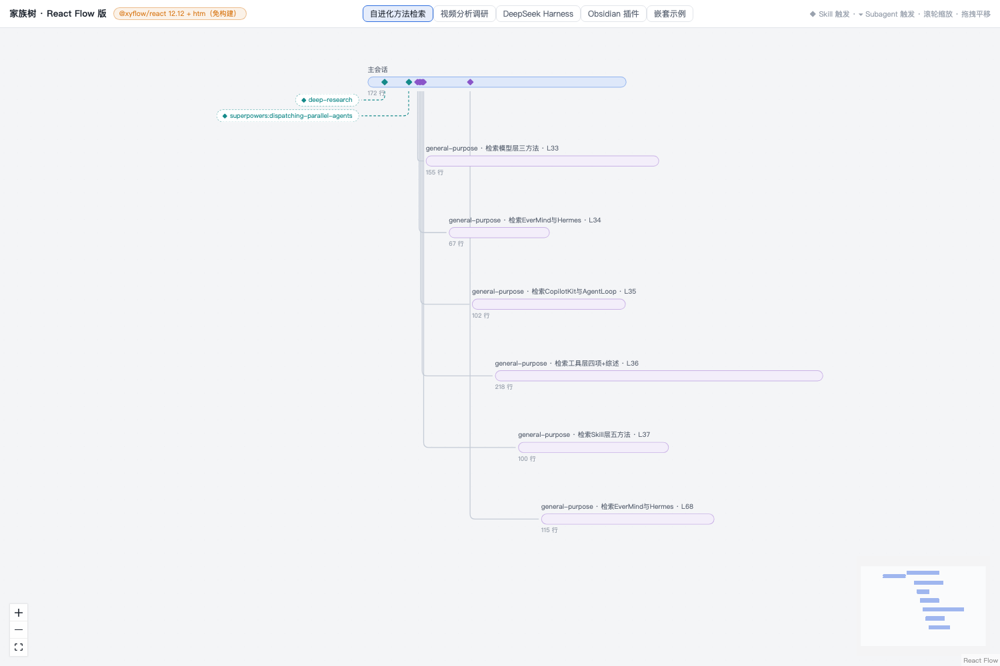
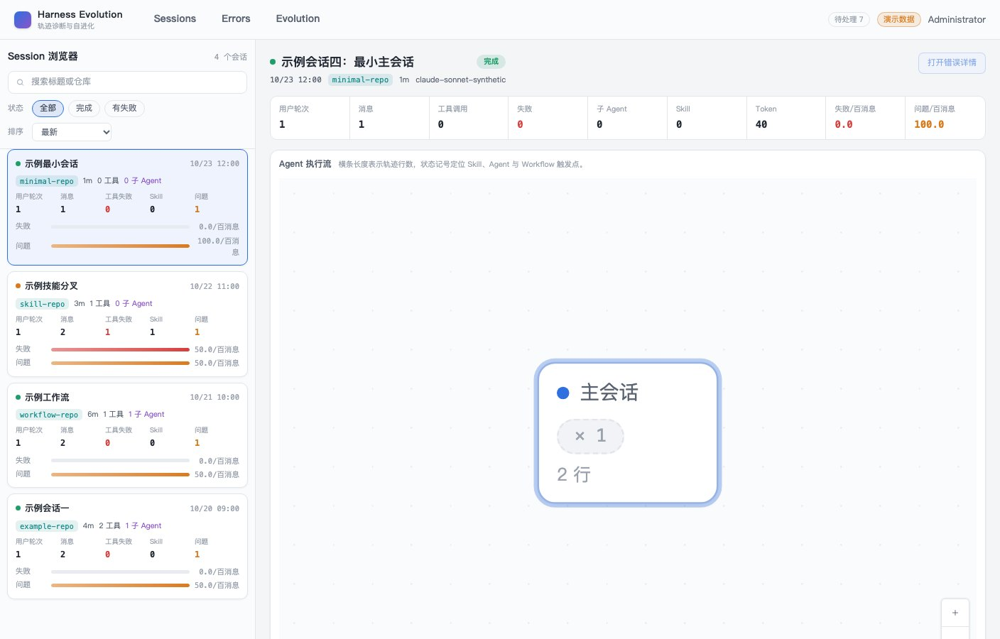
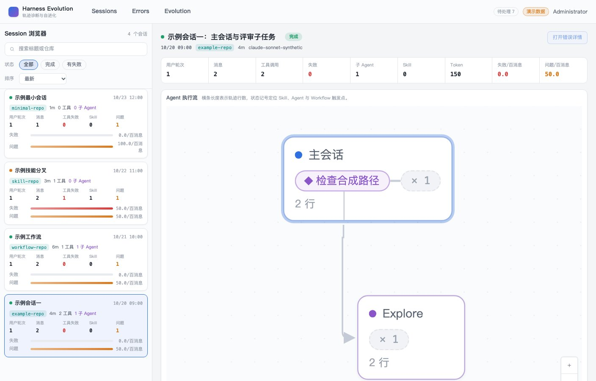
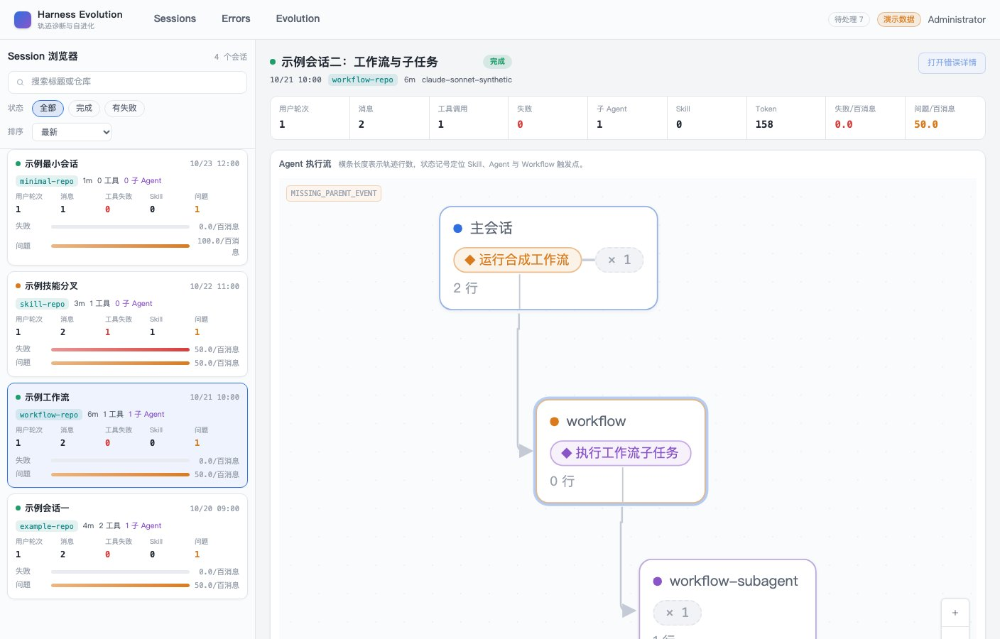
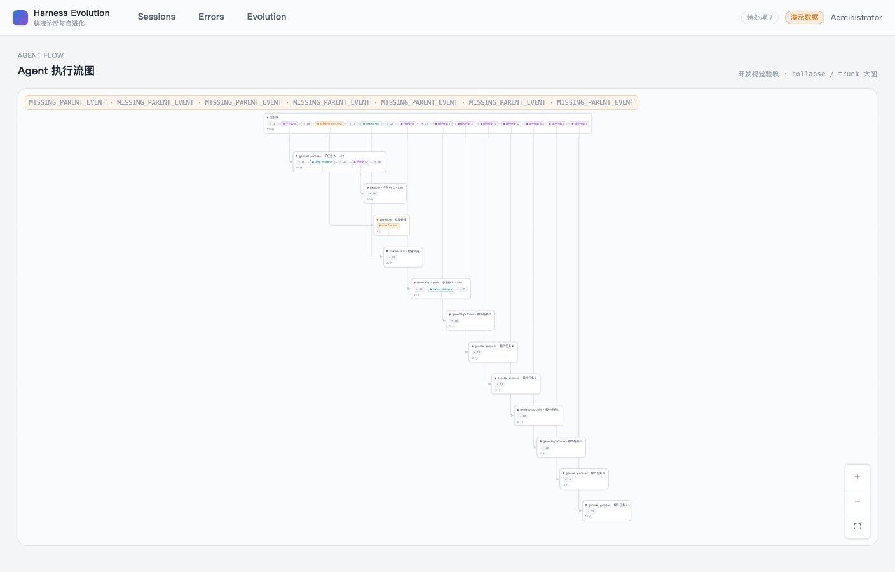
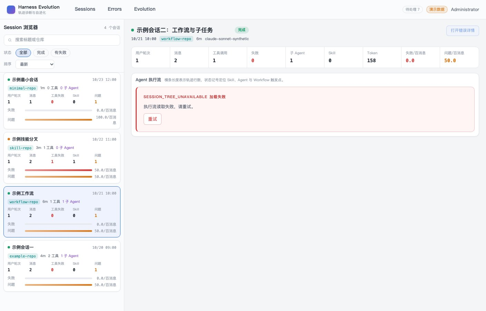
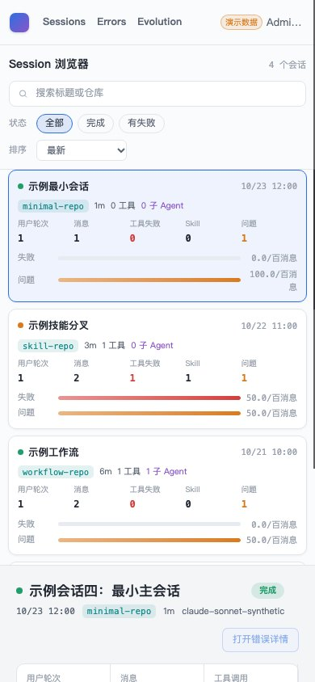

- Issue
- #43 · M3 Agent flow graph
- PR
- #106
- Commit
- 11cc9da + reviewed smoke fix
- Runtime
- FastAPI + Vite + Chrome CDP
- Database
- SQLite seeded fixtures
- CUA limitation
- macOS locked; native AX unavailable; real Chrome/CDP used without bypass
Harness Evolution · PR #106
M3-03 生产 Agent 执行流集成冒烟
在真实 FastAPI、SQLite、Vite 与 Chrome 上验证四个生产 Session 的 Agent 树接线、独立状态、键盘定位、缩放、折叠和响应式布局。
4生产 Session
8树节点
12已验证场景
0未解决缺陷
Environment and Artifact
2026-10-26 · macOS · Chrome headless/CDP · localhostScenario Matrix
12 pass| # | 场景 | 结果 | 观测 | 证据 |
|---|---|---|---|---|
| 01 | 四个 Session 加载树 | PASS | 四个 canonical Session 逐个选中，树节点数为 1/2/3/2，合计 8。 | screenshots/02-four-session-tree.jpg URL 与 selected card 同步 |
| 02 | 生产树 API 与懒加载 | PASS | 选中后请求 /api/sessions/{sid}/tree；Vue Flow 独立 chunk，不进入 /sessions 首屏闭包。 | API server logs pnpm verify:bundle |
| 03 | 键盘焦点与选择 | PASS | Vue Flow 外层节点/边不作为 Tab stop；节点原生 button 接受 Enter 并更新 aria-pressed。 | m3-session-browser E2E outerTabs 全为 null |
| 04 | 节点居中定位 | PASS | 选中节点后 setCenter 更新 viewport transform；生产 E2E 断言 transform 改变。 | m3-session-browser E2E screenshots/03-keyboard-locate-zoom.jpg |
| 05 | 缩放与适应画布 | PASS | 缩小后矩阵从 2.5 变为 2.08333，放大恢复 2.5，适应画布保持节点可见。 | Chrome CDP transform 对比 3 个可访问控制按钮 |
| 06 | 大图折叠展开 | PASS | demo-nested 大图从 2 个节点展开到 13 个节点，折叠节点可操作。 | screenshots/04-large-expanded-tree.jpg m3-agent-tree E2E |
| 07 | 单层树面板与图例 | PASS | 树外层白色面板边框正常，Vue Flow 内层 border=0；图例位于画布左下角，距左边 6px、底边 5px。 | screenshots/01-production-tree.jpg computed style |
| 08 | 树错误与列表隔离 | PASS | CDP 注入 tree 503 后显示执行流错误态，四个 Session 卡仍保留且可继续选择。 | screenshots/05-tree-error.jpg list=4 |
| 09 | 问题卡边界 | PASS | 未渲染 m4 问题卡；只计算布局 anchor，不伪造问题数据。 | issueCards=0 代码与契约审查 |
| 10 | 1408px 布局 | PASS | 页面宽度与视口一致，侧栏 360px，树面板 720px，无横向溢出。 | screenshots/01-production-tree.jpg scrollWidth=clientWidth=1408 |
| 11 | 390px 布局 | PASS | 单列布局，生产树 fit 后全部节点位于画布内，页面无横向溢出。 | screenshots/06-production-tree-390.jpg scrollWidth=clientWidth=390 |
| 12 | 控制台与隐私 | PASS | 正常路径无 warning/error；tree 503 和初始 refresh 401 仅由精确测试谓词忽略。报告不含正文、凭据或绝对路径。 | browserViolations=[] 报告资产扫描 |
Issues and Observations
No defects foundNo defects were found.
Evidence
7 screenshots






Automated Coverage Assessment
4 areas reviewed| 区域 | 覆盖 | 结论 | 建议 |
|---|---|---|---|
| 生产 Session 接线 | 真实 API + Chrome | 四个 Session 均加载独立 tree，节点合计八个。 | 后续页面 issue 复用同一 query key 与树组件。 |
| 交互与无障碍 | 真实 Chrome E2E + CDP | 单焦点、Enter 选择、setCenter、缩放与折叠均有证据。 | m4 问题定位复用 locateAgent。 |
| 状态隔离 | 组件测试 + CDP 503 | 树错误不替换列表或概览，retry 可单独执行。 | 保持 tree query 独立。 |
| 原生 Computer Use | 受 macOS 锁屏阻塞 | 未绕过锁屏，使用真实 Chrome/CDP；页面视觉和交互证据完整。 | 解锁后可补一次原生窗口截图，不改变产品结论。 |
Conclusion
通过生产 Session 页面的 Agent 执行流接线与原型交互验收通过，未发现未解决产品缺陷。
- 四个 canonical Session 的树均可见且可追踪到根。
- Vue Flow 保持懒加载，首屏 bundle 边界不变。
- 键盘、定位、缩放、折叠和 390px 均通过。
- 原生 CUA 被 macOS 锁屏阻塞，报告使用真实 Chrome/CDP 证据并明确标注。
证据源：真实 FastAPI/Vite/Chrome/CDP、截图、computed style 与既有自动化门禁。HTML 由 JSON renderer 生成。